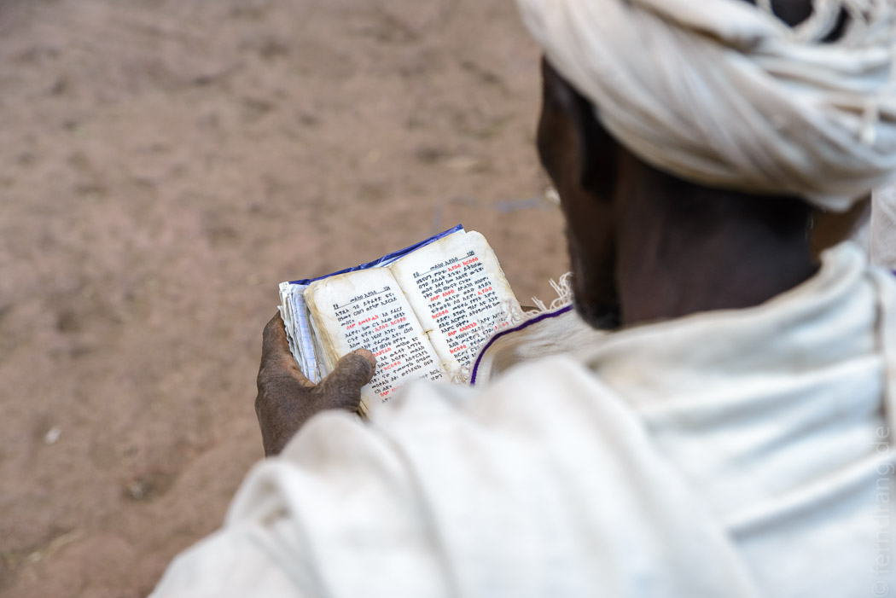
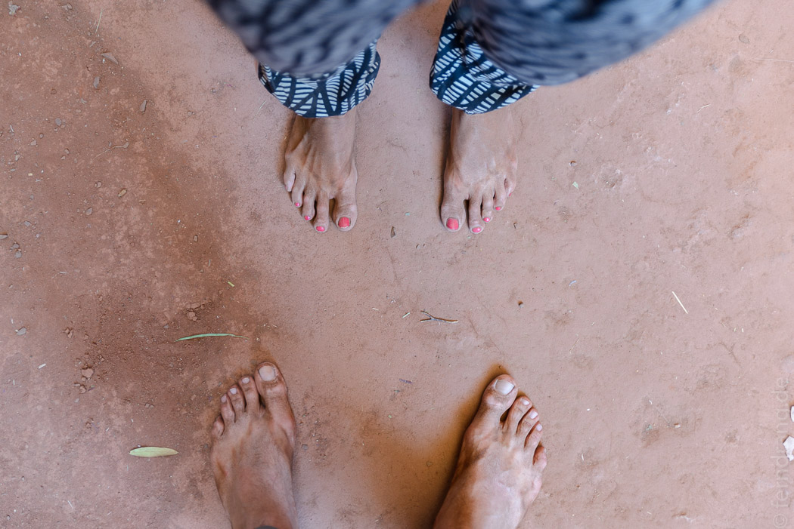
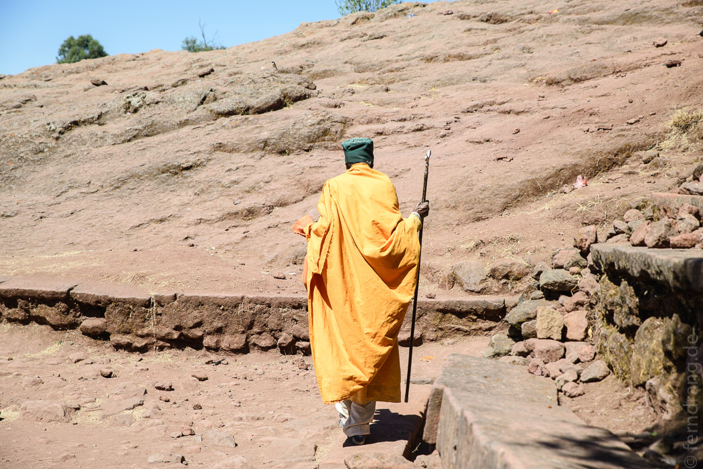
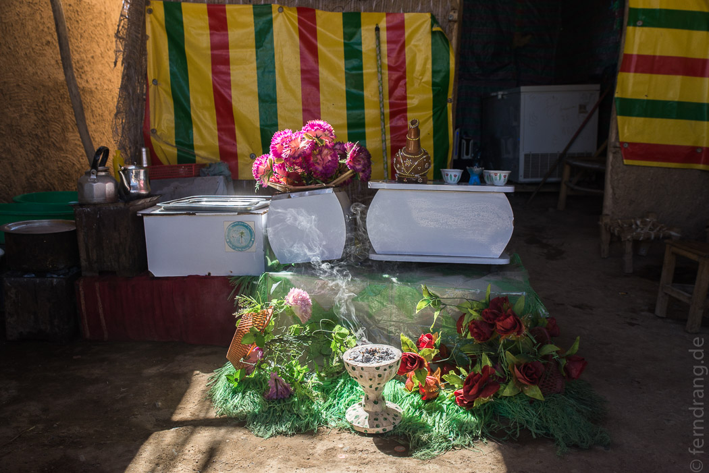
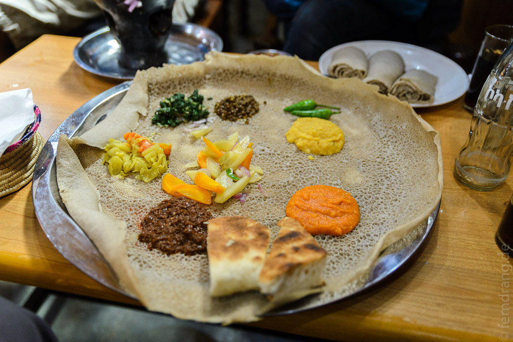

Äthiopien ist eigen. Hier macht man alles ein bisschen anders. Da ist zum Beispiel die Zeitrechnung nach dem Julianischen Kalender. Fast zumindest, denn die Jahre werden anders gezählt. An unserem 11. September 2016 hat in Äthiopien das Jahr 2009 begonnen. Das Weihnachtsfest landet dadurch, wie bei den meisten orthodoxen Kirchen, auf dem 7. Januar. Aber auch die Stunden werden hier anders betrachtet. Nicht nur, dass die legendären "10 minutes" alles zwischen einer Viertelstunde und einem halben Tag bedeuteten kann, die Äthiopische Zeit hinkt der ostafrikanischen Zeitzone sechs Stunden hinterher. So kommt es, dass Leute mit einer großen 2009 auf ihrem nagelneuen T-Shirt herumlaufen und der Bus "im Morgengrauen" um 11 pm abfährt.
Aber auch abseits der Zeit ist Äthiopien eigen. Die Äthiopisch-Orthodoxe Kirche ist sehr alt und hatte eine Menge Zeit eine eigene Architektur und eigene Rituale zu bilden. In den Kirchen beten Männer und Frauen getrennt, die Kirchbauten sind in Ringen aufgebaut, und man steht beim Gebet, wofür es extra einen Achselstock gibt, wenn es mal länger dauert. Beim Betreten macht man einen Kniefall und küsst den Boden, bei der Messe wird gerasselt und getrommelt und Kopftuch und am liebsten weiß getragen. Alles ein bisschen anders als wir es kennen. Die Heiligenbilder, mit denen viele Kirchen gepflastert sind, sind auf eigentümliche Weise vertraut und mit ihren schwarzen Engeln und Marien und der allseits verehrten Figur des heiligen Georg gleichzeitig sehr äthiopisch. Die meisten Kirchen investieren in eine Außenlautsprecheranlage, bei der Reichweite vor Klang geht. Sonntags morgens rufen dann nicht die Muezzins sondern die orthodoxen Priester. Die Wirkung auf den Schlafenden ist leider vergleichbar, mit dem Nachteil sogar, dass meistens gleich die ganze Messe übertragen wird.
Sogar die Geschichte des Landes ist eigen und anders als die der Nachbarn, denn die unzähligen Kaiser und Könige, die ihren Stammbaum alle gern bis zu König Salomon verfolgen, waren seit Urzeiten Christen und weitestgehend unabhängig. Missionare waren nicht nötig und weite Teile des äthiopischen Reiches waren nie kolonisiert, von kurzen aber unangenehmen Phasen europäischer Einmischung abgesehen.
Auch die Natur ist eigen. Die nördliche Hälfte des Landes liegt fast vollständig über 2000m und das Simien-Gebirge ragt 4500m in den Himmel. Von "afrikanischem" Klima ist daher wenig zu spüren und man kann sich glücklich schätzen, wenn man nachts nicht friert. Dafür bieten die Landschaften atemberaubende Panoramen auf ein wildes, schönes, staubiges Land.
Tatsächlich entkommt man dem Staub nirgendwo. Die Regionen unterscheiden sich durch Farbe und Feinheit des Staubs. Aber überall kommt man mit dreckigen Füßen nach Hause. Und wenn das Wasser knapp ist, behält man den Dreck auch zuhause am Leib. In den meisten Häusern und Hütten abseits der größeren Städte gibt es kein fließendes Wasser. Wasser lebt hier nicht in der Leitung, sondern in den allgegenwärtigen gelben Kanistern, die im ganzen Land von Kindern, Greisen, Eseln und Kamelen durch die Gegend geschleppt werden. Wassermann ist hier kein Sternzeichen sondern ein Beruf. Trotzdem haben die Häuser oft ein WC, Spülbecken und Leitungen. Vielleicht eine Planung aus besseren Zeiten? Leider ist die Kunst der Wartung nicht weit verbreitet, so dass was kaputt geht meist kaputt bleibt. Immerhin wird man so das Abwasser recht hygienisch wieder los.
Stromausfälle sind ebenfalls an der Tagesordnung. Aber der wird zumindest nicht in Batterien ins Haus geschleppt. Der Strom wird vor allem für Handys und den Fernseher gebraucht. Jeder, der kann, lässt in Dauerschleife Musikvideos laufen. Hier ist natürlich Lokalpatriotismus angesagt. In vier Wochen haben wir nicht ein ausländisches Lied gehört. Äthiopier hören Musik aus Äthiopien. Die Videos sind alle gleich. Der "Star" steht in der Landschaft, singt und übermittelt Herzschmerz durch Holzhammer-Mimik. Schnitt. Eine gemischte Gruppe in Trikots und Kleidern tanzt die regionalen Tänze: Den berühmten Schultertanz, Hüpfen-und-Gehen, Umsehen-und-Glotzen. Alles so schnell, dass die bunten Klamotten zu Schlieren werden.
Den Hintergrund der Videos bieten nicht die unansehnlichen Städte sondern urtümliche, ländliche Szenen. Nur, dass das weder gestellt noch pittoresk ist sondern harte Realität. Das ganze Land wird von Hand bestellt. Überall wächst Teff, das lokale Getreide. Aber bis es als Injera auf dem Teller liegt, wird es von Menschen und Tieren geschnitten, getragen, zertrampelt, verlesen, wieder getragen, gemahlen und irgendwann durch geheimnisvolle Prozesse zu Injera verschwammt, das im Zweifel auch nochmal irgendwo hin getragen wird. Überhaupt wird ständig etwas getragen. Während man sich wundert, dass Menschen nur mit einem Handy in der Hand und ohne Gepäck in einen Fernbus steigen, so übernehmen Fußgänger jeden Alters den Transport von Wasser, Lebensmittel und Feuerholz, deren Beschaffung das Leben der Landbevölkerung bestimmt.
Nebenher wird viel gebaut. In einem Land, das seine Bevölkerung in den letzten 25 Jahren verdoppelt hat, könnte die ein oder andere Unterkunft fehlen. Im Wesentlichen gibt es zwei Ansätze: Die Hütte und das Hochhaus. Hütten bauen sich fast von selbst: Erst wird mit Holzlatten eine Art Zaun gebaut, der das Wellblech trägt. Damit kommt man schon durch ein paar Jahreszeiten. Von innen schützt ein Lehm-Stroh-Gemisch gegen den Wind. Wenn es gut läuft, kommt außen auch noch so eine Schicht drauf. Mit etwas Farbe wird eine Villa daraus. Besonders geliebte Hütten bekommen irgendwann außen eine kleine Mauer aus dicken Steinen, die verleiht Glanz und Stabilität, auch wenn sie selten höher als einen Meter wird.
Die Alternative Hochhaus scheint deutlich schwieriger zu realisieren sein. Der Rohbau ist schnell gemacht, aber die Chancen ein mehrstöckiges Haus zu Ende zu bringen scheinen schlecht zu stehen. Überall ragen die nackten Skelette zeitgenössischer Bauruinen in die Luft. Wie Schmuck stechen die lang gezogenen Stahlstangen aus den unfertigen Wänden und langsam vergammeln die fragilen Baugerüste auf den verlassenen Baustellen. Zusammen mit dem Staub sorgen die Bauruinen allerorts für Schäbigigkeit in den Städten. In Addis ist höchstens die Hälfte der Häuser "fertig". Die kleineren Städte machen etwas Charme durch liebevoll geschmückte Rikschas und die allgegenwärtigen Cafés wett.
Dort kann man die berühmte äthiopische Kaffeezeremonie, wenn auch meist in verkürzter Form, erleben: Auf dem Boden werden Gras oder Blätter ausgelegt. Darauf steht ein kleines Kommödchen mit winzigen Tässchen und einem Eimer Wasser zum Spülen. Ein kleines Holzkohle-Öfchen wird mit einem Fächer angefacht, dazu wird Weihrauch verbrannt. Wer mehr Zeit mitbringt, kann auch dem Rösten beiwohnen. Denn Kaffee wird oft nur getrocknet verkauft. In einer kleinen Pfanne werden die Bohnen dann geröstet. Die Kaffeeköchin präsentiert dem Gast mit der dampfenden Pfanne das gelungene Aroma. Dann wird gemörsert und alles in einem großen Topf ohne Sieb vorgekocht. Die typischen Kaffeekrüge werden direkt in die Kohlen gesteckt. Meistens sind gleich mehrere Kannen im Spiel, die immer wieder in einander umgefüllt werden, so dass man am Ende einen glühenden, aber oft sehr guten Lava-Kaffee genießen kann.
Neben Kaffeetrinken kann man sich die Zeit in Saftbars vertreiben. Hier werden Schicht-Säfte gemacht: Avocado, Erdbeeren, Bananen, Mangos oder Papayas werden zu dickem Brei verarbeitet und geschichtet in großen Krügen gereicht. Super lecker, super dick, und weder mit dem Strohhalm noch mit dem Löffel gut zu trinken (oder essen?).
Zu jeder Tageszeit treffen sich Freunde und Bekannte um zu snacken und zu schnacken. Je enger die Beziehung desto komplizierter wird die Begrüßung. Äthiopier haben ein umfangreiches Repertoire dafür, vom einfachen Händeschütteln, über den Schultergruß bis zu Küsschen, Umarmungen und komplizierten Handchoreographien. Mit wachsender Verehrung werden Wiederholungen eingepflochten (z.B. zwei Mal Schulter, drei Küsschen, eine Umarmung). Dann wird viel gegessen und gelacht.
Es hat etwas gedauert, bis wir herausbekommen, dass die Portionen in der Regel für zwei reichen. Denn beim Essen wird immer geteilt. Die Gerichte kommen auf einem großen Tablett, das mit dem schwammig-sauren Injera ausgelegt ist. Darauf kommt eine Kelle Eintopf, der an den zwei Fastentagen pro Woche ohne Fleisch zubereitet wird. Gute Freunde füttern sich gegenseitig mit den besten Stücken.
Beim Diskutieren wird es oft nicht nur laut sondern auch hoch. Je nach Grad der Aufregung und Freude geht die Stimme der Männer bis in unerträgliche Höhen. Zuerst haben wir vermutet, dass der Stimmbruch hier erst mit 40 eintritt, aber das Fisteln und Kreischen scheint eine verbreitete Angewohnheit zu sein. Das trägt nicht unerheblich dazu bei, dass man ein Gespräch auf Amharisch einfach nicht ausblenden kann, egal wie wenig man versteht. Am Ende streiten sich die alten Freunde, wer bezahlen darf und gehen Hand in Hand nach Hause.